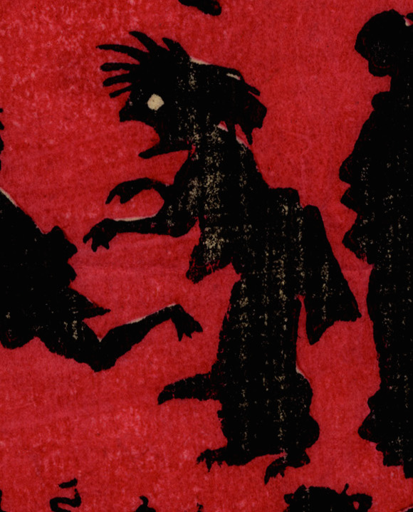

女物の着物を着た河童。両腕を前に出して口を大きく開き、何かを脅しているように見える。
著作者：小林英次郎／出典：親書誌：U426_nichibunken_0270：しん板かげゑづくし；シンパン カゲエズクシ／日付：2014／資源識別子：U426_nichibunken_0270_0017_0000
Copyright (c)2010- International Research Center for Japanese Studies, Kyoto, Japan. All rights reserved.